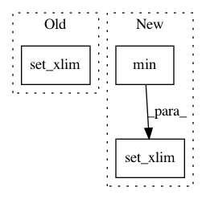

8e4250ba8221d956c282067d11e2df8a4c3299ab,librosa/display.py,,__axis_log,#Any#Any#Any#Any#Any#Any#,414
Before Change
im_phantom.set_data(*args)
axes_phantom.images[0] = im_phantom
axes_phantom.set_xlim(0, data.shape[1])
axes_phantom.set_ylim(0, data.shape[0])
positions = np.linspace(0, n, n_ticks, endpoint=False, dtype=int)
values = np.linspace(0, 0.5 * sr, n, endpoint=True, dtype=int)
After Change
kwargs["aspect"] = aspect
axes_phantom.images[0] = im_phantom
axes_phantom.set_xlim(args[0].min(), args[0].max())
axes_phantom.set_ylim(args[1].min(), args[1].max())
positions = np.linspace(0, n, n_ticks, endpoint=False, dtype=int)
values = np.linspace(0, 0.5 * sr, n, endpoint=True, dtype=int)
In pattern: SUPERPATTERN
Frequency: 3
Non-data size: 3
Instances
Project Name: librosa/librosa
Commit Name: 8e4250ba8221d956c282067d11e2df8a4c3299ab
Time: 2015-01-28
Author: brian.mcfee@nyu.edu
File Name: librosa/display.py
Class Name:
Method Name: __axis_log
Project Name: automl/ParameterImportance
Commit Name: 452ba152ac70560fbbf460c0e4a69c2ea2037a3c
Time: 2017-02-15
Author: biedenka@informatik.uni-freiburg.de
File Name: pimp/evaluator/forward_selection.py
Class Name: ForwardSelector
Method Name: _plot_result
Project Name: scipy/scipy
Commit Name: af6f52cd3cee8ade0c4a78d6ef254279c0af111a
Time: 2017-01-31
Author: perimosocordiae@gmail.com
File Name: scipy/spatial/_plotutils.py
Class Name:
Method Name: _adjust_bounds